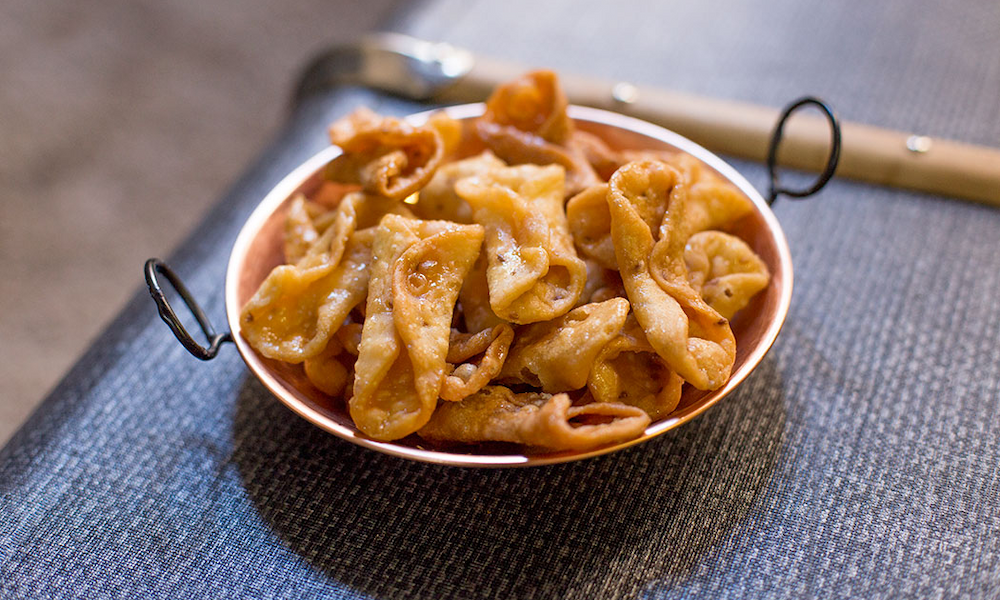

Home
Spanish
Japanese
Cajun
Cuban
Puerto Rican
Spanish Dessert Recipe
HONEY-BATHED PESTIÑOS

INGREDIENTS LIST
For the pestiños:
300 gr Strong flour - you can also use plain flour but the result will not be as good.
125 gr Sherry wine - fino or amontillado are best
1 zest Orange
20 gr Sesame seeds
1 tsp Anise seeds
0.5 tsp Ground cinnamon
1 pinch of Salt
25 gr Extra virgin olive oil
350 gr Sunflower oil
For the honey-bath:
125 gr Honey
25 ml Water
1 tbsp Lemon juice